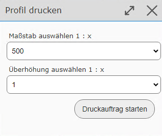

Höhenprofil¶
Mit diesem Werkzeug kann ein Höhenprofil entlang einer gezeichneten (Poly)Linie erstellt werden. Im Werkzeugdialog muss bestimmt werden, für welchen Fall (Maßstab/Überhöhung) das Profil erstellt werden sollten.

Bemerkung
Der Maßstab bestimmt dabei in der Regel, wie viele Zwischenpunkte abgefragt werden sollen. Wählt man beispielsweise einen sehr großen Maßstab für einen sehr langen Linienzug, kann die Erstellung des Profils sehr lange dauern, weil dann sehr viele Zwischenpunkte abgefragt werden. Im schlimmsten Fall ist die Abfrage gar nicht möglich.
In der Karte kann jetzt eine Linie mit mehreren Zwischenpunkten erstellt werden.

Klickt man danach im Werkzeugdialog auf Profil erstellen, wird nach kurzer Berechnungszeit das Höhenprofil angezeigt:

Bemerkung
Ist das Profile zu „ungenau“ (hat zu wenige Zwischenpunkte) kann der Profiltype geändert und das Profil neu erstellt werden.
Bemerkung
Das im Viewer angezeigte Höhenprofil ist interaktiv. Bewegt man die Maus auf einen der Höhenpunkte, wird die Höhe als Tooltip angezeigt. Gleichzeitig wird an der entsprechenden Stelle in der Karte auf der gezeichneten Profillinie ein Marker dargestellt.
Über den Drucken Button im Werkzeugdialog kann das Profil auch als PDF ausgegeben werden. Dazu erscheint noch einmal ein Dialog, in dem der Zielmaßstab und die genaue Überhöhung des Profils angegeben werden kann:
Nach erfolgreichem Erstellen der PDF Datei erscheint eine Vorschau im Druckaufträge Dialog und das Höhenprofil kann herunter geladen werden: